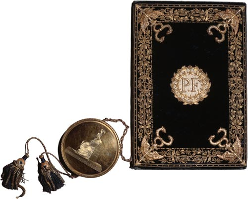
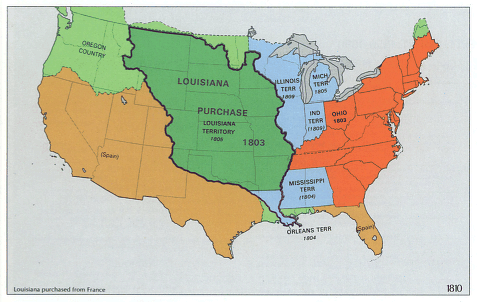

U.S. FOREIGN POLICY / WEEK 02
Expansion, trade, and the Monroe Doctrine
- 1801–1829
- Dr. Murat Toman
U.S. FOREIGN POLICY / WEEK 02
The main idea
- The early United States expanded its territory and defended its trade. These choices also intensified arguments about presidential power, slavery, and Indigenous sovereignty.
- Buying territory, restricting trade, fighting a war, and issuing a public warning are different ways to influence events. A purchase involves bargaining. A trade restriction can impose costs. A warning may have little effect if others doubt it. Compare the tool, the target, and the result rather than calling every action simply ‘power’.
U.S. FOREIGN POLICY / WEEK 02
Where this week fits in history
| When | Selected event |
|---|---|
| 1778 | French alliance supports American independence |
| 1787 | Constitution allocates foreign-policy powers |
| 1803 | Louisiana Purchase |
| 1823 | Monroe Doctrine |
U.S. FOREIGN POLICY / WEEK 02
History through a source

- This document is evidence of an official statement or decision. Its wording and appearance help us identify the source, but its promises still need to be checked against evidence of actions and results.
- Use the linked transcription or PDF to read the text. Ask who issued it, what it claims, and whose viewpoint is missing.
U.S. FOREIGN POLICY / WEEK 02
The Louisiana Purchase on a map

- The highlighted area places the purchase in its continental setting. Territory, rivers, and neighboring claims help explain why governments valued the region.
- This later reference map summarizes territorial claims. It does not show Indigenous consent or the experiences of people living on the land.
U.S. FOREIGN POLICY / WEEK 02
Key words explained
- Sovereignty: A claim to rule a territory and make political decisions independently.
- Doctrine: A stated set of principles that guides policy.
U.S. FOREIGN POLICY / WEEK 02
Key words explained
- Embargo: A restriction or ban on trade.
- Capability: The resources and practical ability to carry out a policy.
U.S. FOREIGN POLICY / WEEK 02
More land brought new political disputes
- The Louisiana Purchase increased U.S. territory, but expansion was more than a change on a map.
- It raised questions about presidential authority and the future of slavery. New land could offer strategic advantages while creating new disputes over who would control it and how it would be governed.
U.S. FOREIGN POLICY / WEEK 02
A purchase treaty does not tell everyone’s story
- The Louisiana Purchase treaty records an agreement between governments claiming authority to transfer land. It does not prove that the people living there agreed to the transfer.
- Indigenous nations had their own political authority and interests. Reading the treaty carefully means asking whose consent and rights it leaves out.
U.S. FOREIGN POLICY / WEEK 02
Trade could become a tool of pressure
- The United States depended on trade across the Atlantic. European wars disrupted shipping and helped produce conflict that led to the War of 1812.
- Restricting trade was one attempt to pressure other countries without immediate military action. Economic pressure could also hurt people and businesses at home.
U.S. FOREIGN POLICY / WEEK 02
The Monroe Doctrine stated an ambition
- In 1823, President Monroe warned against further European interference in the Americas. That statement expressed a policy position, but the United States had limited ability to enforce every part of it.
- A public declaration shows what a government says it wants. Its military, economic, and diplomatic resources help determine what it can do.
U.S. FOREIGN POLICY / WEEK 02
Different tools produce different effects
- Buying territory, restricting trade, fighting a war, and issuing a public warning are different ways to influence events. A purchase involves bargaining.
- A trade restriction can impose costs. A warning may have little effect if others doubt it. Compare the tool, the target, and the result rather than calling every action simply ‘power’.
U.S. FOREIGN POLICY / WEEK 02
Politics at home and abroad
- At home: Expansion affected constitutional debates, commercial interests, slavery, and Indigenous communities.
- Abroad: The government sought more territory and safer trade while resisting European interference.
- The connection: domestic support and resources affect what leaders can promise abroad. International events can change domestic priorities.
U.S. FOREIGN POLICY / WEEK 02
How power worked
| Form of influence | How it operated in this week |
|---|---|
| Hard power | War and trade restrictions sought to change other countries’ choices by imposing costs. |
| Soft power | The image of an independent republic and claims of solidarity could appeal to audiences, but a declaration alone did not create influence. |
- Territorial purchase is bargaining, not automatically soft power; a doctrine’s declaration is not proof of enforcement capacity.
U.S. FOREIGN POLICY / WEEK 02
A worked explanation
- Does announcing a doctrine mean a country can enforce it?
- No. A declaration states a position. Enforcement depends on resources, other countries’ reactions, and the wider international situation.
- Why this matters: Buying territory, restricting trade, fighting a war, and issuing a public warning are different ways to influence events. A purchase involves bargaining. A trade restriction can impose costs. A warning may have little effect if others doubt it. Compare the tool, the target, and the result rather than calling every action simply ‘power’.
U.S. FOREIGN POLICY / WEEK 02
Practice with the documents
- Find a warning or principle in the Monroe Doctrine.
- Find a specific obligation in the Louisiana Purchase treaty.
- Explain the difference between announcing a policy and making an agreement. Identify what evidence would show whether either changed events.
U.S. FOREIGN POLICY / WEEK 02
How to support an answer
- A claim is what you argue. Evidence is a specific passage, event, or finding that supports it. Explain the connection between them.
- Example structure: “The document claims ____. This suggests ____. It cannot by itself show ____.”
- A speech can establish what a speaker said. Evidence of actions and consequences is needed to judge whether the policy worked.
U.S. FOREIGN POLICY / WEEK 02
What to remember
- Expansion changed domestic political balances as well as international geography.
- A state-to-state territorial transfer did not erase Indigenous sovereignty or establish universal consent.
- Economic pressure can be coercive even without military force.
- The Monroe Doctrine’s original significance must be assessed against contemporary capabilities.
U.S. FOREIGN POLICY / WEEK 02
Reading guide
- Louisiana Purchase Treaty (1803) A document from the period. Use it to identify what officials claimed or authorized, then check other evidence for the consequences. External source page; access may vary.
- Monroe Doctrine (1823) A document from the period. Use it to identify what officials claimed or authorized, then check other evidence for the consequences. External source page; access may vary.
Louisiana Purchase Treaty (1803) — External source page; access may vary.
Monroe Doctrine (1823) — External source page; access may vary.
U.S. FOREIGN POLICY / WEEK 02
Reading guide
- Monroe Doctrine, 1823 A retired historical background essay. Use it for context, and compare its account with scholarship and other perspectives. External source page; access may vary.
- From Colony to Superpower: U.S. Foreign Relations since 1776 A scholarly narrative companion for historical periods. Select the relevant period; no unverified page assignments are supplied. Publisher record; full text may require institutional access.
Monroe Doctrine, 1823 — External source page; access may vary.
Office of the Historian Milestones: retired series, retained online for historical reference; not a current-policy source.
From Colony to Superpower: U.S. Foreign Relations since 1776 — Publisher record; full text may require institutional access.
U.S. FOREIGN POLICY / WEEK 02
Video and audio guide
- Monroe Minute: Monroe Doctrine Identify the strategic circumstances surrounding the 1823 declaration.
- Before It Became History | The Monroe Doctrine: A New Vision for American Foreign Policy Trace the doctrine as a claim about the Western Hemisphere rather than a timeless rule.
Monroe Minute: Monroe Doctrine — Free provider page; external player may require consent or be region-dependent
Title and YouTube page verified; also linked by CFR’s Monroe Doctrine resource guide.
Before It Became History | The Monroe Doctrine: A New Vision for American Foreign Policy — Free provider page; external player may require consent or be region-dependent
Published July 31, 2026; institutional podcast.
U.S. FOREIGN POLICY / WEEK 02
Using the sources carefully
- Linked readings and media offer particular viewpoints. Compare them with the lesson and other evidence. Some sources require institutional access.
- Media links and descriptions were checked when the course resources were prepared. Full playback was not tested.